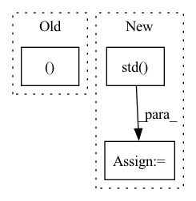

Pattern ID :18438
Before Change
loss = F.mse_loss(Y_hat, y, reduction="none")
if not is_sum_over_tasks:
n_tasks = prod(Y_hat[0, 0, ... ].shape)
loss = loss / n_tasks // takes an average over tasks
batch_size = loss.size(0)After Change
elif agg_over_tasks == "sum":
loss = loss.sum(keepdim=True, dim=1)
elif agg_over_tasks == "std":
loss = loss.std(keepdim=True, dim=1)
elif agg_over_tasks is None:
loss = loss // shape = [batch_size, n_tasks]
else:
raise ValueError(f"Unkown agg_over_tasks={agg_over_tasks}.")In pattern: SUPERPATTERN
Frequency: 5
Non-data size: 3
Instances Fragment ID: 60236342
Project Name: yanndubs/lossyless
Commit Name: c8ef0b6b635ba0e212baf30a60596f78e08a56fa
Time: 2021-02-22
Author: yanndubois96@gmail.com
File Name: lossyless/helpers.py
M Class Name: AnonimousClass
N Class Name: AnonimousClass
M Method Name: mse_or_crossentropy_loss(4)
N Method Name: mse_or_crossentropy_loss(4)
M Parent Class:
N Parent Class:
M File Name: lossyless/helpers.py
N File Name: lossyless/helpers.py
M Start Line: 437
M End Line: 442
N Start Line: 444
N End Line: 465
Before Change
X_train_iso = X_train[num_cols].to_numpy()
return X_train_iso, ohe_enc
def get_n_test_splits():
return len(test_years)
After Change
X_train_iso = X_train[num_cols].to_numpy()
data_mean = X_train_iso.mean(0)[None,:]
data_std = X_train_iso.std( 0) [None,:]
data_std[data_std==0] = 1
return X_train_iso, ohe_enc, data_mean, data_std Fragment ID: 60236339
Project Name: bit-ml/anoshift
Commit Name: 3fc5c9e58886164dbd1b67777655f2666f7cdca9
Time: 2022-10-10
Author: haller.emanuela@gmail.com
File Name: baselines/load_anoshift.py
M Class Name: AnonimousClass
N Class Name: AnonimousClass
M Method Name: get_train(2)
N Method Name: get_train(2)
M Parent Class:
N Parent Class:
M File Name: baselines/load_anoshift.py
N File Name: baselines/load_anoshift.py
M Start Line: 87
M End Line: 89
N Start Line: 87
N End Line: 93
Before Change
buffer.clear()
while len(buffer) < N:
action, prob, val = agent.choose_action(observation)
observation_, reward, done, truncated, info = env.step(action)
terminal = done or truncated
n_steps += 1
score += rewardAfter Change
score_history.extend(cumulative_rewards)
avg_score = np.mean(cumulative_rewards)
std_score = np.std( cumulative_rewards)
print(
f"iteration: {iteration}, "
f"avg_score: {avg_score:.1f}, "
f"std_score: {std_score:.1f}, " Fragment ID: 60236337
Project Name: neurotorch/neurotorch
Commit Name: 198788020cc23b8cba6fed918112de1ff32fb3ba
Time: 2022-12-15
Author: 50332514+JeremieGince@users.noreply.github.com
File Name: tutorials/reinforcement_learning/ppo_from_youtube.py
M Class Name: AnonimousClass
N Class Name: AnonimousClass
M Method Name: main(0)
N Method Name: main(0)
M Parent Class:
N Parent Class:
M File Name: tutorials/reinforcement_learning/ppo_from_youtube.py
N File Name: tutorials/reinforcement_learning/ppo_from_youtube.py
M Start Line: 357
M End Line: 428
N Start Line: 356
N End Line: 449
Before Change
self.data.append(transition)
def train_net(self,n_epi,writer):
state_, action_, reward_, next_state_, done_mask_, old_log_prob_ = self.data.make_batch(self.device)
old_value_ = self.v(state_).detach()
td_target = reward_ + self.gamma * self.v(next_state_) * done_mask_
delta = td_target - old_value_After Change
advantage_lst.reverse()
advantages = torch.tensor(advantage_lst, dtype=torch.float).to(self.device)
returns = advantages + old_values
advantages = (advantages - advantages.mean())/(advantages.std() +1e-3)
for i in range(self.K_epoch):
for state,action,reward,next_state,done_mask,old_log_prob,advantage,return_,old_value \
in self.data.choose_mini_batch(self.minibatch_size, states, actions, rewards, next_states, done_masks, \ Fragment ID: 60236335
Project Name: seolhokim/mujoco-pytorch
Commit Name: 87e9db1820bc2af3e9af6d55a55dbe4e6dd00bf4
Time: 2021-05-09
Author: kilmya1@naver.com
File Name: agent.py
M Class Name: PPO
N Class Name: PPO
M Method Name: train_net(3)
N Method Name: train_net(3)
M Parent Class: nn.Module
N Parent Class: nn.Module
M File Name: agent.py
N File Name: agent.py
M Start Line: 41
M End Line: 60
N Start Line: 42
N End Line: 70
Before Change
out = super().training_step(batch, batch_idx)
class_loss = out["loss"]
neg_cos_sim, z_std = self._shared_step(out["feats"], out["momentum_feats"])
metrics = {
"train_neg_cos_sim": neg_cos_sim,After Change
// calculate std of features
with torch.no_grad():
z_std = F.normalize(torch.stack(Z[: self.num_large_crops]), dim=-1).std(dim=1) .mean()
metrics = {
"train_neg_cos_sim": neg_cos_sim, Fragment ID: 60236350
Project Name: vturrisi/contrastive-learning
Commit Name: 86c4867274fe6e2998fd272d4fcdc17f196fdeab
Time: 2022-04-12
Author: vt.turrisi@gmail.com
File Name: solo/methods/byol.py
M Class Name: BYOL
N Class Name: BYOL
M Method Name: training_step(3)
N Method Name: training_step(3)
M Parent Class: BaseMomentumMethod
N Parent Class: BaseMomentumMethod
M File Name: solo/methods/byol.py
N File Name: solo/methods/byol.py
M Start Line: 164
M End Line: 167
N Start Line: 199
N End Line: 215